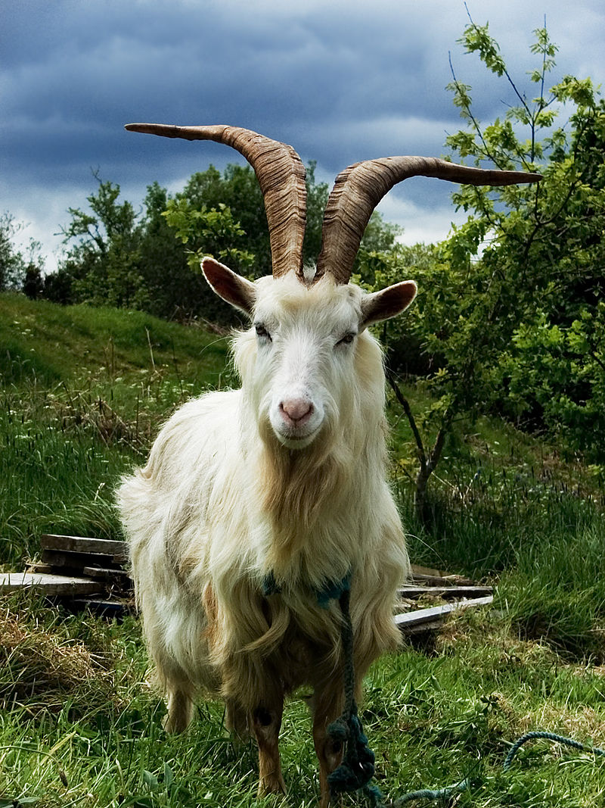

Hvorfor firmaer bør købe geder

dato: 15/02-25
Skrevet af: Ole Hansen
I en tid med stigende interesse for bæredygtighed og øget fokus på innovative løsninger, kan geder være en utraditionel, men effektiv investering for firmaer. Geder er alsidige dyr, der ikke kun bidrager til landbrugsproduktion, men også kan hjælpe med at fremme bæredygtige og grønne initiativer.
Naturlig græsafgræsning
Geder er fremragende til græsning og kan bruges til at vedligeholde store græsarealer, marker eller endda parker. De er i stand til at spise uønskede planter og ukrudt, hvilket minimerer behovet for kemiske herbicider og reducerer den miljømæssige påvirkning.
Bæredygtig produktion
Mælke- og kødproduktion fra geder er en bæredygtig alternativ til konventionelt landbrug. Gedeprodukter er eftertragtede, især i økologiske og nichemarkeder, og kan være en ekstra indtægtskilde for firmaer, der ønsker at diversificere deres forretning.
Kreativ markedsføring
Geder kan også bruges som en del af en kreativ markedsføringsstrategi, hvor firmaer skaber opmærksomhed omkring deres bæredygtighedsinitiativer eller deres produktionsmetoder. Firmaer kan fx arrangere events, der involverer dyrene eller bruge dem i reklamekampagner.
Affaldshåndtering
Geder er også gode til at spise organisk affald, såsom grene, blade og rester fra landbrugsproduktionen, hvilket hjælper med affaldshåndtering og kan reducere firmaers affaldsudgifter.
Samlet set kan geder tilbyde både økonomiske og miljømæssige fordele for firmaer, der ønsker at fremme en bæredygtig fremtid, samtidig med at de forbedrer deres forretningsdrift.